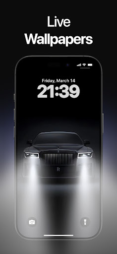
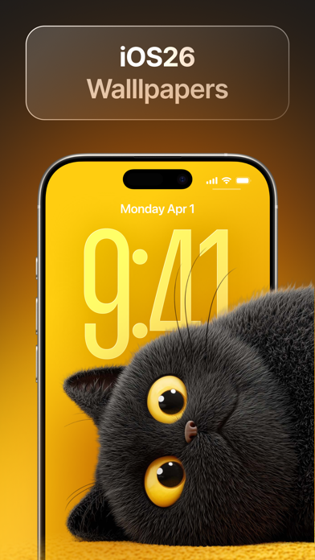

Wallpics 深度盘点：把手机桌面变成一张会呼吸的画布
从内容发现到参数调优，从 Android 到 iOS，Wallpics 在动态壁纸这条赛道上到底做到了什么，还有哪些说不出口的短板。
它是什么，以及为什么值得认真盘一遍
动态壁纸这件事并不新鲜——安卓原生从 2.0 就支持了，iOS 也有自己的 Live Photo。但大多数人对动态壁纸的印象还停留在"偶尔晃两下的视频循环"，或者直接把电量消耗和发热等同起来。Wallpics 想做的不是又一个壁纸库，它的官网上能找到完整的功能介绍，而是一个让动态壁纸这件事"可用、可调、可感知"的完整方案。
它的核心思路很简单：把"壁纸"从一张静态图升级成一个可以交互、可以调参、可以响应传感器的动态层。这个思路拆开来看，其实覆盖了好几个能力域，每个域里都有值得单独聊一聊的设计细节。

内容发现：搜不到好壁纸？可能是关键词写得不对
一个壁纸应用的第一门槛永远是"能不能快速找到想要的那一张"。Wallpics 在这方面做了一些看起来不那么显眼但其实很实用的优化。
搜索框支持的关键词类型比想象中丰富。最有效的三种是：具体 IP 或角色名（比如"原神 雷电将军"会比"原神"精准得多，因为官方对热门 IP 做了专门的标签体系）、车型全名（"法拉利 SF90"能过滤掉大量法拉利 Logo 静态图）、以及视觉风格 + 通用词（"赛博朋克 城市"比单独搜"赛博朋克"命中率高很多）。不太好用的关键词也有规律可循——太泛的词（"壁纸""好看"）会出来几千条等于没搜，英文缩写在部分版本支持不好，带年份的搜索因为 Wallpics 不按年份打标签所以加不加都一样。
搜索结果的排序逻辑也值得一说。默认是"相关度 + 热度"混合排序，但顶部可以切换成最相关、最新、热门、4K 优先这四种不同视角。这对不同使用场景的人来说差别很大——想找新鲜内容的切最新，想找高质量大图的切 4K 优先，想看看大家都在用什么的切热门。
如果真的搜不到，还有几个应急技巧：换同义词（"跑车"不行试试"超跑"）、换分类入口（有时候分类标签里的内容搜索不到，但分类滑几下就能看到）、或者干脆等更新——热门 IP 和车型官方会持续补内容。
动态壁纸的两条路线：视频循环 vs 视差分层
Wallpics 最核心的区分点在于，它提供了两种完全不同的动态壁纸技术路线，而不是只靠一种打天下。
普通动态壁纸走的是视频循环路线——本质上就是一段无缝循环的短视频，GPU 持续解码播放。这种路线的优点是适用范围广、几乎所有设备都能跑，缺点也明显：没有交互性、3D 感只是平面动画，而且高码率视频对 GPU 的持续占用会让发热和耗电都上去。
视差壁纸走的是另一条路：多层图像 + 陀螺仪感应。Wallpics 把壁纸拆成前景、中景、背景几个独立图层，每层以不同的速度响应手机倾斜——前景移动幅度大所以看起来离你近，背景移动幅度小所以显得远，中间层按比例位移，叠在一起就产生了真实的 3D 深度感。你晃手机的时候，看到的不是"一段视频在动"，而是"画面有前后层次，它们各自独立移动"。

并不是所有动态壁纸都做了视差。判断一张壁纸支不支持视差，最快的方法是看标签——分类页里标有"Parallax"或"3D"字样的肯定支持；或者点开大图预览，轻轻倾斜手机，画面有分层移动就是视差版，否则就是普通动态。
参数调优：在流畅度和电池之间找自己的平衡点
如果说内容发现和技术路线决定了"Wallpics 能不能用"，那参数调优决定了"Wallpics 好不好用"。这一块是它比其他同类应用做得更细的地方。
可调参数主要集中在四个维度：动画速度、视差强度、循环模式、帧率限制。动画速度从 0.5x 到 2.0x 四档，0.5x 适合动漫和自然风景这种需要细腻粒子流动的场景，2.0x 视觉震撼但耗电明显加快。视差强度从 25% 到 100% 三档，50% 是官方推荐值——既能明显感受到 3D 深度又不晃眼，100% 适合喜欢强烈位移效果但可能觉得"晕"的用户。循环模式提供平滑循环（尾帧首帧自动衔接无跳跃）、反弹（播放到末尾倒放回来）、单次播放后停留三个选项，覆盖了从通用场景到充电动画这种特殊需求。帧率限制则是省电的关键开关——不限制帧率画面最流畅但耗电最多，30 FPS 能省 15-20%，24 FPS 适合电池焦虑症用户。
官方还给了三套预配置组合：平衡型（1.0x + 50% 视差 + 不限帧）适合大多数人，极致省电型（0.5x + 25% 视差 + 24 FPS）实测能比平衡型少 40% 电池消耗，视觉盛宴型（1.5x-2.0x + 高视差 + 反弹循环）体验最强烈但待机减少 30-60 分钟属正常。更细的参数对照表和效果实拍可以去Wallpics文档翻。
跨端设置：Android 和 iOS 的差距比想象中大
安装包从Wallpics下载拿好之后，设置动态壁纸这件事，Android 和 iOS 的体验差别非常大——大到值得单独拎出来说。
Android 版有一键应用：在 Wallpics 里找到想要的壁纸，点开大图预览，底部就有"应用 / Set Wallpaper"按钮，点一下弹三个选项（设为主屏、设为锁屏、设为两者），系统自动跳转，3-5 秒搞定。如果遇到第三方启动器拦截一键应用的情况（部分定制 UI 会这样），还有系统设置路径可以走：先把壁纸下载到本地，长按主屏空白处 → 壁纸 → 从 Wallpics 相册选 → 裁剪 → 应用。
iOS 版就麻烦得多。每次设置都需要手动跳转系统设置的完整流程：Wallpics 把壁纸保存到相册 → 打开设置 → 墙纸 → 选取新墙纸 → 在相册里找到刚才那张 → 调整位置 → 设定 → 选主屏还是锁屏。这套流程每一次都要走，没有捷径。
设置成功的验证方法也有讲究。除了视觉检查（倾斜手机看视差分层），还建议做一次重启验证——有些低端机型动态壁纸重启后会被重置成系统默认，这时候需要去 Wallpics 设置里开启开机自启权限。
短板也要说
说了这么多好的，几个客观局限还是得摆出来。
首先是 iOS 的系统限制太硬。iOS 不允许任何应用直接替换主屏和锁屏壁纸，必须走系统设置，这套流程不仅繁琐，而且每次换壁纸都要重复一遍——这不是 Wallpics 的问题，是平台本身的限制，但对 iOS 用户来说体验确实打了折扣。
其次是耗电。这一点 Wallpics 没藏着，它直接把耗电情况和参数组合关联起来告诉你。视差壁纸需要持续读陀螺仪传感器、多层图像合成也比单张图片解码更吃 GPU，"一天待机减少 30-60 分钟"这个数字是官方自己给出的参考。如果你电池本来就不够用，这可能是个硬门槛。
第三是设备兼容性。视差效果需要陀螺仪传感器，部分百元机和 iOS 老设备（iPhone 8 及更早）可能处理不流畅；GPU 解码能力不足的设备在设置高码率动态壁纸时可能会出现黑屏——这种情况只能换码率更低的壁纸，没有别的解法。
最后是搜索的局限性。Wallpics 的内容标签体系虽然在中文支持上做得不错，但部分英文缩写关键词命中不好；分类标签里的内容和搜索结果也不是完全同步的——有时候在分类里滑几下能看到的壁纸，直接搜关键词反而找不到。
什么样的人该用它
综合这些特点，Wallpics 最适合三类人。
第一类是喜欢折腾桌面的发烧友。 这类人换壁纸的频率高、对视觉效果有明确偏好，愿意花时间调参数找平衡点。Wallpics 给的参数颗粒度足够细，三套预配置组合也帮他们省了试错成本。
第二类是追求视觉质感的设计师或内容创作者。 视差分层带来的 3D 空间感是普通静态壁纸给不了的——如果你的手机桌面本身就是你表达审美或展示作品的一部分，Wallpics 提供的视差路线可能是目前移动端能做到的最接近"会呼吸的画布"的方案。
第三类是日常换壁纸的普通用户，但不满足于简单的"好看就行"。 如果你想在"换壁纸"这件事上多一层选择——比如区分主屏和锁屏用不同动态效果、或者在赛博朋克和极简风之间快速切换——Wallpics 把搜索、调参、跨端设置这些环节都打通了，你不需要再跳转好几个应用来回折腾。
总的来说，Wallpics 不是那种"装上就能一键变好看"的应用——它需要你花一点时间去理解它的能力边界、去调那几组参数。但它做对了一件事：把"动态壁纸"从一个被忽略的系统功能，变成了一个有内容、有参数、有选择的完整产品。完整的资料维护在三个仓库同步更新，GitHub 上是主仓，Gitee 和 GitCode 方便国内用户更快拉取。